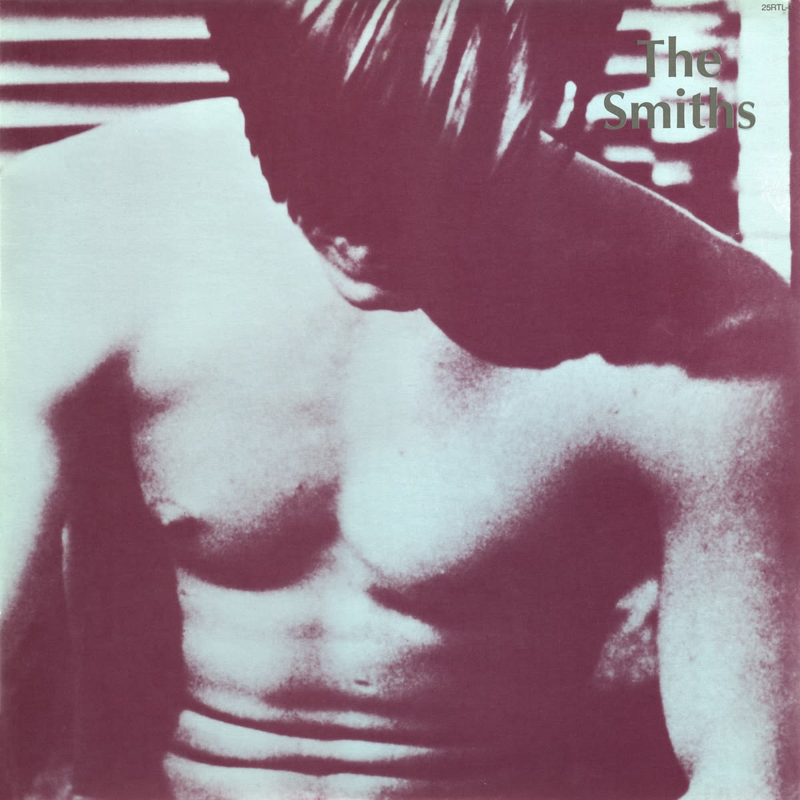
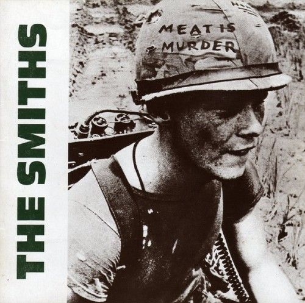
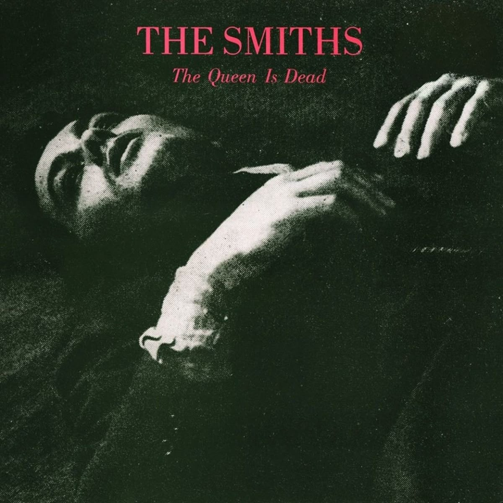
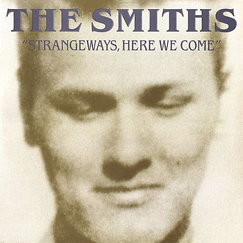

The Smiths Archive
Home
Músicas
Login
Cadastro
Formulário
Dashboard
Sair
꧁A Trilha Sonora da Melancolia꧂
1. The Smiths (1984)

2. Meat Is Murder

3. The Queen Is Dead

4. Strangeways, Here We Come
